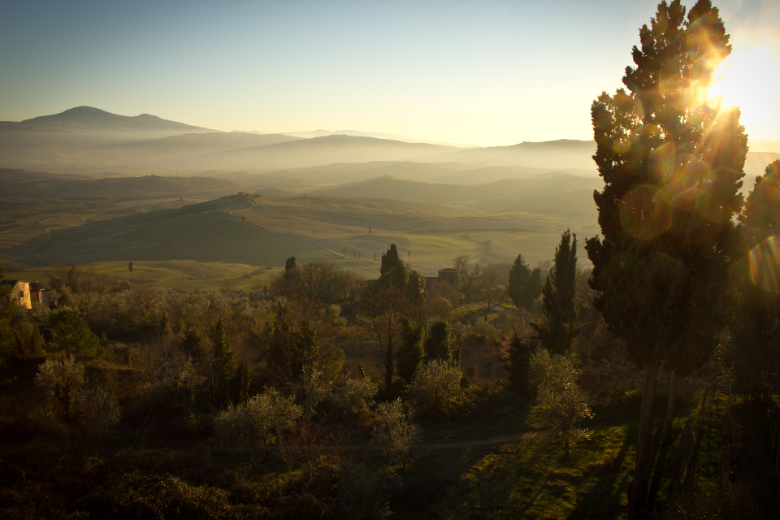

718.555.4442
Welcome To Our Home

Once upon a time in a tiny village in the hills of Tuscany a tradition was born.
The Pastaio family started sharing with neighbors small batches of pasta, dough and tomato sauce made with fresh basil, sea salt and herbs from their farm in the foothills.
When our grandfather arrived in New York City 60 years ago he had dreams of sharing his special recipes with his new neighbors on Arthur Ave in The Bronx.
Today we continue in the tradition with our family owned Italian restaurant
NOSTRA CASA (Our Home)
We specialize in traditional thin-crust pizza, fresh made lasagna and spaghetti with an emphasis on using the freshest ingredients along with techniques that have been passed down from generation to generation.
We have partnered with small farms in upstate New York to source our organic produce as well as cheeses, charcuterie and meats for our dishes.
We take pride in using the finest ingredients which are hormone and antibiotic free.
*Gluten Free? No problem!
We make all of our dough in the restaurant, using seperate ovens and prep areas to keep the wheat out.
It is our honor to serve the Bronx and Upper/ Northern Manhattan community.
We hope you enjoy the ambience of our beautiful Restaurant while savoring the taste of a long-standing Italian family tradition. Buon appetito!!!